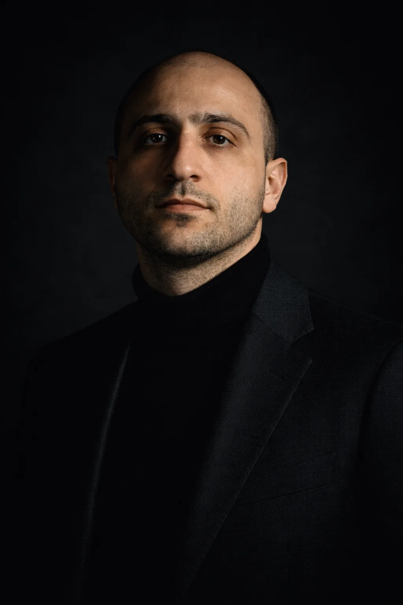

От вас — к следующему поколению.
До вас не дозвониться.
Не докричаться.
Не достучаться.
Перехватить контроль над компанией и не дать ей развалиться?
Остановить финансового директора, выводящего $20 млн на офшор?
Отличить союзников от предателей в совете директоров?
Удержать ключевых людей, которые владеют стратегической информацией?
Найти счета, пароли и нужные документы?
Или всё, что вы строили, рассыплется — потому что знание ушло вместе с вами?
Юристы составят завещание.
Банкиры структурируют трасты.
Но кто передаст вашу логику? Ваш инстинкт? Ваше видение?
Не зависит от одного человека. Решения принимаются системно. Уезжаете на три месяца — ничего не проседает.
Не просто «в курсе». Признаны окружением как легитимные лидеры. Понимают логику, а не только цифры.
Юридическая архитектура фиксирует то, что спроектировано на уровне людей. Фонды, трасты, корпоративное управление — как инструмент, а не как самоцель.
Карта активов, контактов, решений, «как тут всё устроено на самом деле» — оцифрована и доступна. Не в голове основателя, а в системе.
Это то, что мы проектируем и внедряем. Не отчёты. Не рекомендации. Работающую систему передачи — от диагностики до результата.
Работаем со всеми четырьмя слоями:
Готовность наследников, легитимность, конфликты, ключевые люди.
Деперсонализация решений, передача полномочий, Day X Protocol.
Юридическая архитектура, корпоративное управление, Family Constitution.
Защита активов, информационный периметр, антирейдер. В активном конфликте этот слой разворачивается через наш аналитический движок — практику Intelligence.
Стратегическое описание и визуализация вашей системы власти. Полная карта: активы, логика, сценарии, протоколы на случай любого события. Конституция вашей династии в виде инженерной схемы.
От «капсул доверия» до интеллектуальных агентов. Цифровые и аппаратные решения, созданные под вашу логику. Они не обслуживаются — они передаются вам, когда способны жить без нас. И без вас.
Dynasty Stress Test. 3–4 часа структурированного интервью и анализа. На выходе — карта рисков, которых вы не видите изнутри. Конкретные точки уязвимости.
Архитектура передачи. Работа с наследниками. Реструктуризация, если нужна. Ведём проект вместе с вами.
Собираем систему. Когда она готова жить автономно — уходим.
Ежегодный мониторинг, адаптация при изменениях, кризисное реагирование. Династия — не проект с дедлайном.
Активы от 5 млрд рублей, либо выручка от 500 млн рублей в год.
Понимают, что «потом разберёмся» — не стратегия.
Готовы к разговору, который может быть некомфортным.
Хотят систему, а не документ.
Не ищут волшебную таблетку — готовы к реальной работе.
Намеренно ограниченная практика. Каждый проект получает полное внимание команды.
Только по рекомендации. Мы не принимаем заявки и не работаем по холодному обращению.
Операционный штаб из старших специалистов. Каждый — сильнейший в своём домене.

Предприниматель второго поколения — прошёл преемственность изнутри. Совладелец девелоперской компании. Автор подхода Dynasty Engineering и индексов DRI / DSI. Автор книги «Создавая Титанов: стратегия преемственности в эпоху перемен».
Управление критической инфраструктурой: T-Mobile, госпиталь Motol (Прага). Cross-border операции: Чехия, Россия, Армения. Цифровые капсулы знаний, карты активов, системы безопасности.
Нет раздутого штата. Нет младших аналитиков.
Каждый человек — старший специалист с прямым доступом к проекту.
Знание своих границ — наш главный инструмент отбора.
Завещание составят юристы, трасты — банкиры. Мы строим то, что стоит за ними. Если этого не нужно — мы лишние.
Диагностика вскрывает то, что вы предпочли бы не видеть. Без этого работа не имеет смысла.
Преемственность нельзя отдать на аутсорс. Без вашего личного участия систему не собрать.
Это не к преемственности. Острый конфликт — другая наша практика, Intelligence.
Знание исчезает вместе с вами — если вы не передали его.
Доступ только по рекомендации.